ワンクリック多面調査
地図・法令・ハザード・地価・周辺取引事例・周辺施設まで、17のセクションで一覧表示します。
- 取引事例は期間・種別・用途地域で絞り込み、Excel出力も
- 人口推移・路線価図索引
- 調査メニューで項目へすぐ移動
公的データ × AI で、不動産調査業務の生産性を最大化。
公的データの取得・整理から価格判断、提案資料、案件管理までを、ひとつの流れで支援します。
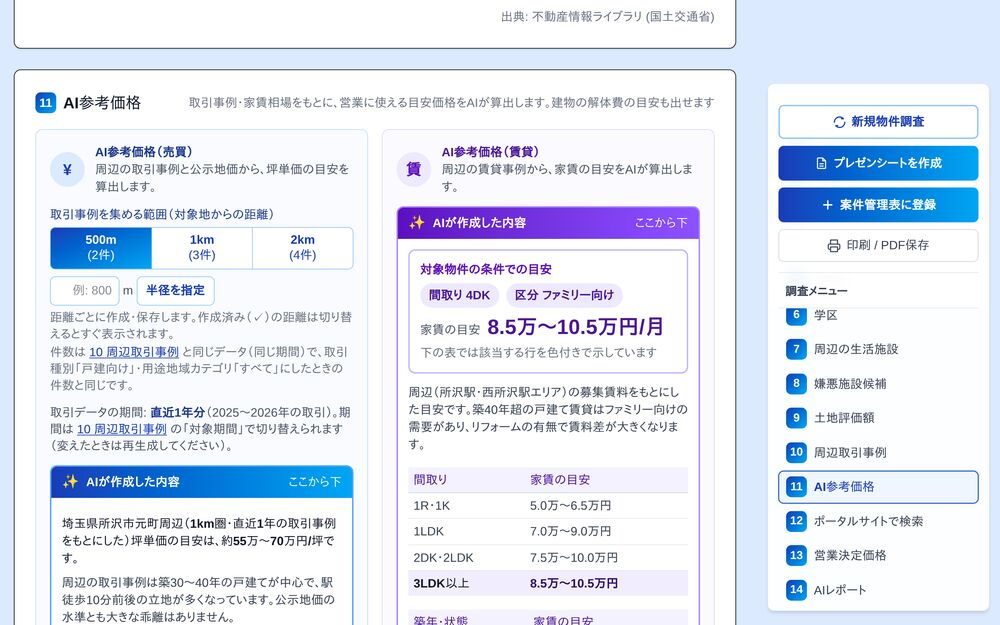
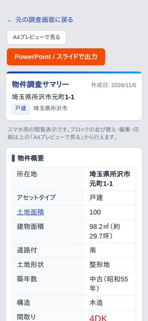
※ 画面はイメージです。数値・住所はダミーです。
PROBLEMS
ひとつでも当てはまったら、調速がきっとお役に立てます。
自治体の窓口やポータルサイトを行き来して、移動と待ち時間で半日が消えてしまう
調べる項目が多く、市街化調整区域などの確認漏れが心配
価格の根拠をそろえるのに、取引事例や相場を何度も調べ直している
お客様向けの資料を、毎回定型文から作成している
案件・顧客・保有物件の情報が、Excelや紙に散らばっている
新人とベテランで、調査品質にバラツキが出てしまう
調速 が、その悩みを1画面に。
バラバラだった作業を1画面に集約。住所の入力から価格の判断、お客様に渡す資料づくりまで、業務の流れをソフトウェアが一気通貫で支援します。
地図・用途地域・建蔽率/容積率・ハザード・学区・地価・周辺取引事例・周辺施設まで。調査に必要な公的データを自動で取得し、17のセクションに整理して1つの画面に表示します。
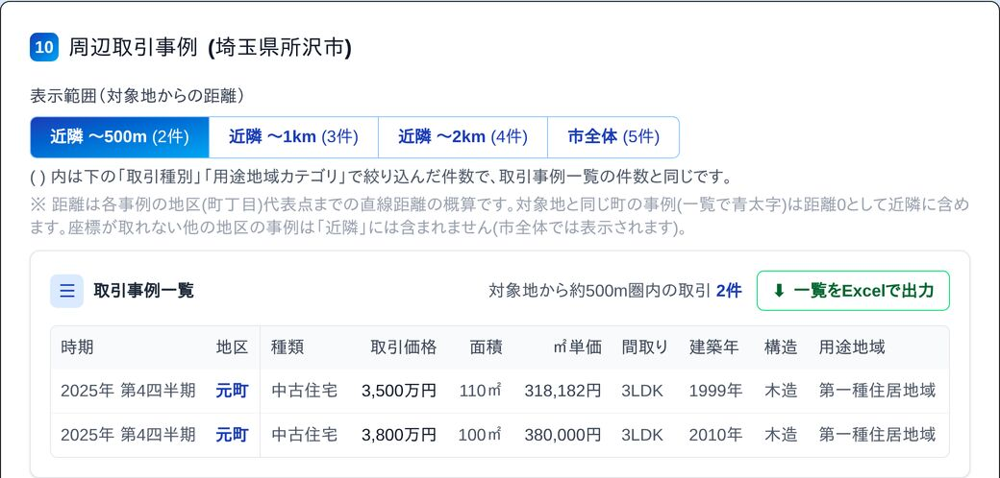
周辺の取引事例・公示地価やWeb上の募集賃料をもとに、坪単価・家賃の目安を築年別の表で整理。解体して売る場合の解体費の概算や、お客様向け提案文の下書きも作成します。いずれも営業担当の判断を支える社内向けの参考情報です。
※ AIの目安は参考値です。不動産の評価・鑑定を行う機能ではありません。最終的な価格判断は宅地建物取引士の確認のもとで行ってください。
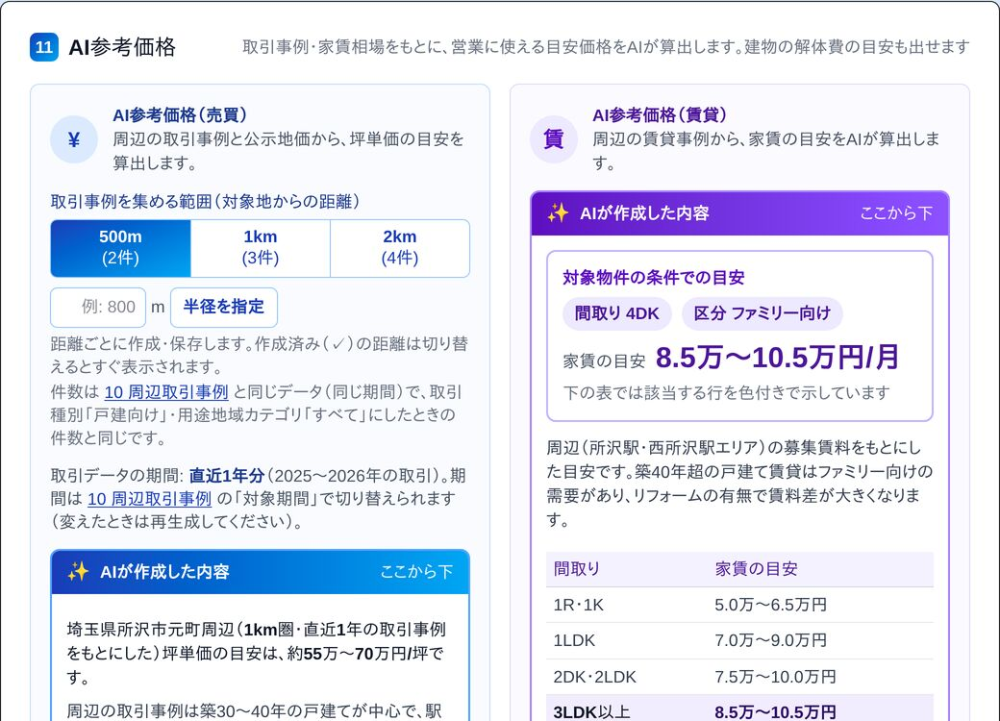
価格の計算表で「自分の考える坪単価」「AIの目安」「解体更地の場合」の3通りを並べて計算。ボタンひとつで営業決定価格に入れ、判断理由とあわせて保存できます。決めた内容はプレゼンシートと案件管理表に反映されます。


市街化調整区域、またはその境界付近と判定された物件は、赤い枠で「要確認」と表示。確認の手順と国土交通省の地図を開くボタンを用意し、都市計画課への確認漏れを防ぎます。

FEATURES
調査業務から価格判断、提案、案件登録まで。現場で本当に必要な機能を、迷わない導線でまとめました。
地図・法令・ハザード・地価・周辺取引事例・周辺施設まで、17のセクションで一覧表示します。
取引事例・公示地価や募集賃料をもとに、坪単価・家賃の目安を築年別に整理。価格判断を支える社内向けの参考情報です。
地域の構造別の解体費の相場から、延床面積をもとに総額の目安を計算します。
3通りの計算を並べ、ボタンひとつで営業決定価格へ。判断理由とあわせて自動保存します。
各ブロックの本文も物件概要の表も、太字・下線・大きさ・色を変えられます。
主要なポータルサイトを、売買・賃貸を切り替えて町名・市名で検索。月極駐車場も地図で探せます。
HOW IT WORKS
特別な準備は不要。住所の入力から、価格の判断、お客様に渡す資料の作成までをソフトウェアが支援します。
調べたい物件の住所と、わかる範囲の物件情報を入力するだけ。
法令・ハザード・取引事例などの調査結果と、AIの参考価格・解体費の目安が一画面に並びます。
計算表で営業決定価格を決め、プレゼンシートを出力。案件管理表にもそのまま登録できます。
WHY 調速
スピードだけでなく、不動産業務の“正確さ”と“安心”を支える設計にこだわりました。
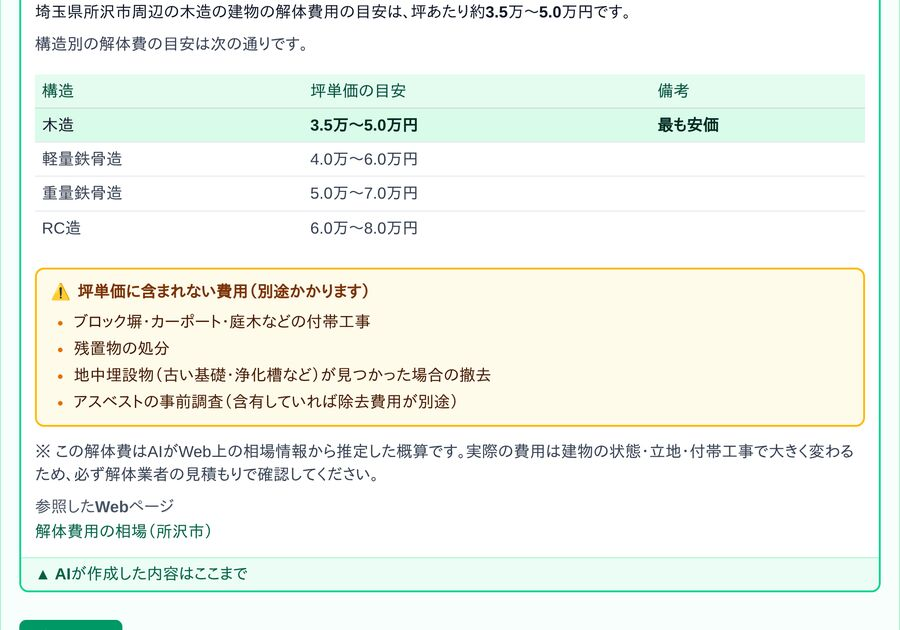
法令・地価・取引事例・ハザードは国土交通省などの公的データ、家賃や解体費の目安はWeb上の相場をもとに表示。出典や一次情報源へのリンクを添えています。
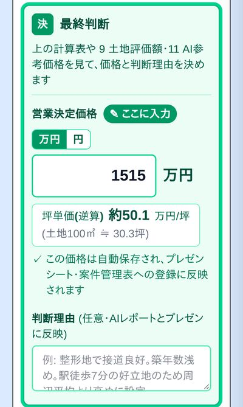
AIは目安や確認すべき観点を示す補助役。最終的な判断は宅地建物取引士が行う前提で設計しています。
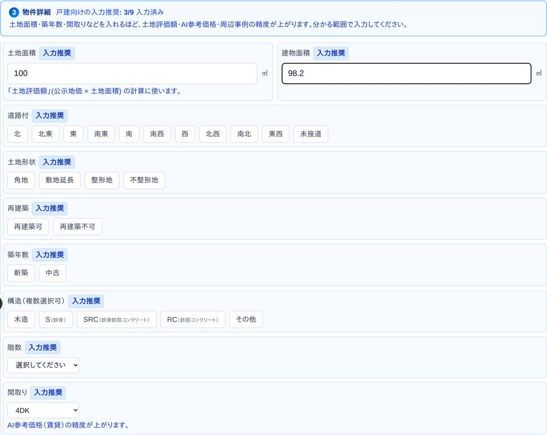
自治体の窓口ページ、路線価図、ポータルサイトの検索を1画面に集約。同じ物件情報を何度も入力し直す手間をなくします。
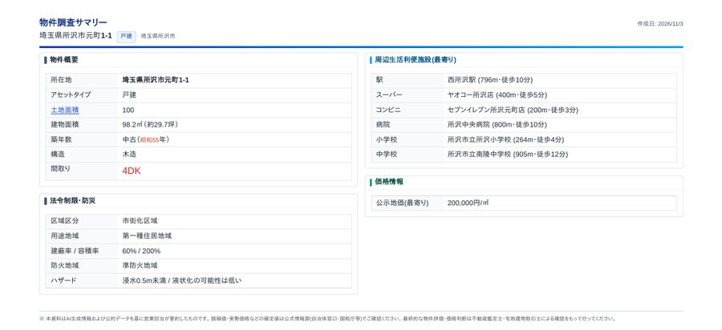
編集したレイアウトのままA4で出力。提案書にも社内の回付資料にも、そのまま使えます。
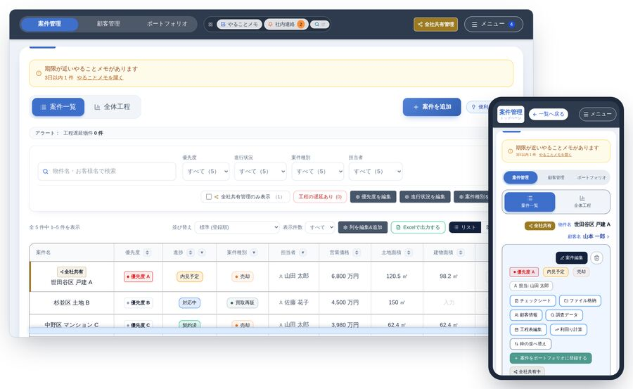
調べた物件・営業決定価格・判断理由が、そのまま案件管理表に反映。同じ情報を二度入力する必要がありません。
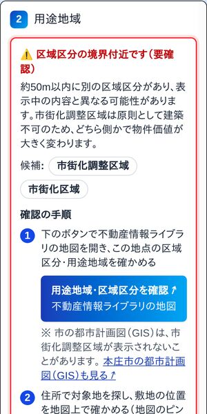
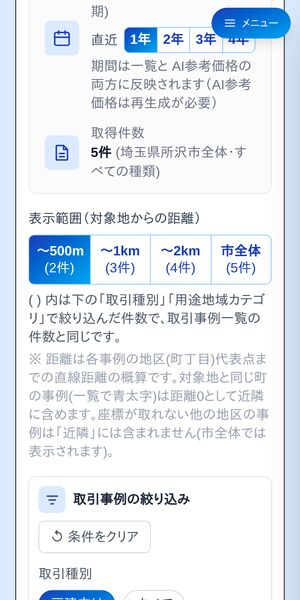
用途地域・ハザード・地価・取引事例などのデータ表示は全国に対応。一部の自治体は窓口リンク集付きです。
※ 画面はイメージです。数値・住所はダミーです。
CASE MANAGEMENT
案件管理表は、案件管理・顧客管理・ポートフォリオの3つの機能を備えた、不動産会社向けの業務アプリです。調速で調べた物件は、案件詳細の「調査データ」にそのまま入ります。
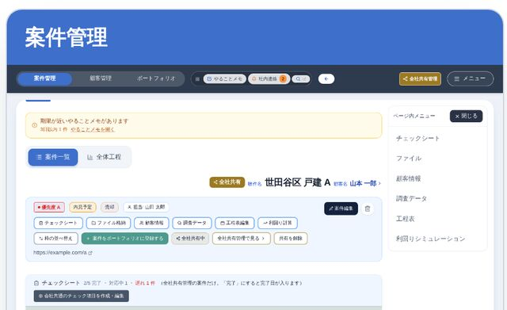
案件ごとに、顧客情報・調査データ・工程表・利回りシミュレーションを1ページで。
お客様を1か所で管理。温度感・進捗・次回アクションがひと目でわかります。

保有物件・レントロール・借入・毎月の収支をまとめて管理。
アラート・やることメモ・社内連絡も共通で使え、すべての機能がスマホに対応しています。
※ 画面はイメージです。会社名・人名・物件名・金額は架空のものです。
FAQ
用途地域・ハザード・地価・取引事例などのデータ表示は全国対応です。一部の自治体は窓口リンク集付きでご利用いただけ、対応は順次拡充しています。
AI参考価格・AI解体費は営業担当向けの参考情報で、お客様向けのプレゼンシートには載りません。不動産の評価・鑑定を行う機能ではないため、最終的な価格は宅地建物取引士の確認のもとで決めてください。
Web上の相場情報からの概算です。建物の状態・立地・付帯工事で大きく変わるため、必ず解体業者の見積もりで確認してください。
いいえ。調速は、お客様ご自身が行う不動産調査業務を支援するクラウド型ソフトウェアであり、調査の代行や不動産の評価・鑑定は行いません。AIは「窓口で確認すべき観点」を提示する補助で、最終的な判断・確認は宅地建物取引士が行う建付けとしています。
物件住所はサーバー側で処理し、認証・通信は暗号化により保護しています。詳細はお問い合わせください。
はい。調査結果の閲覧と、案件管理表のすべての機能がスマホに対応しています。プレゼンシートの編集はPCで行ってください。
契約期間・更新・解約の手続きは利用規約に定めています。詳しくはお問い合わせください。
CONTACT
資料請求・導入のご相談を承っています。内容を確認のうえ、担当者よりご連絡いたします。